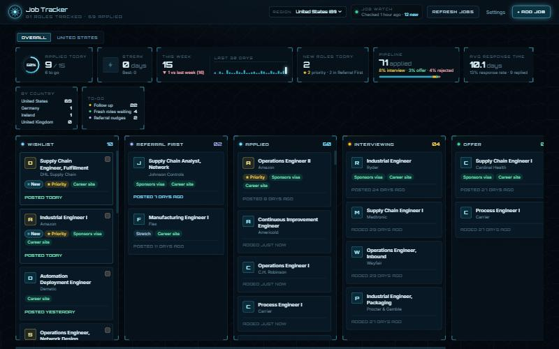

Job Tracker
Built from scratch Next.js · TypeScript · SQLite · AIA desktop app I built to run my own job search. It tracks every application on a board, and it goes out and finds new openings on its own, filtered down to roles I am actually eligible for. It currently manages a live pipeline of 369 roles across 5 countries.

- It searches for me. Checks company career sites first, then runs broad discovery for employers I have not seen. Every result is re-validated in code, not trusted: postings older than 30 days, senior titles, roles that refuse visa sponsorship and anything I previously rejected all get dropped automatically.
- It measures the search like a process. Daily goal tracking, streaks, a 30-day activity chart, interview and offer conversion rates, and average response time. The same instinct as putting KPIs on a production line.
- It runs on zero budget. No paid API. It drives the Claude CLI already installed on my machine, so there is no per-token bill. When one run started consuming 60% of my available usage, I traced the cost to session count rather than prompt size, merged six search sessions into one and cut it by roughly 70%.
- It respects privacy. Everything is local. No account, no server, no analytics. My resume and application history never leave my disk.
Next.js App Router
TypeScript
SQLite (node:sqlite)
Tailwind
dnd-kit
Claude CLI
Readability